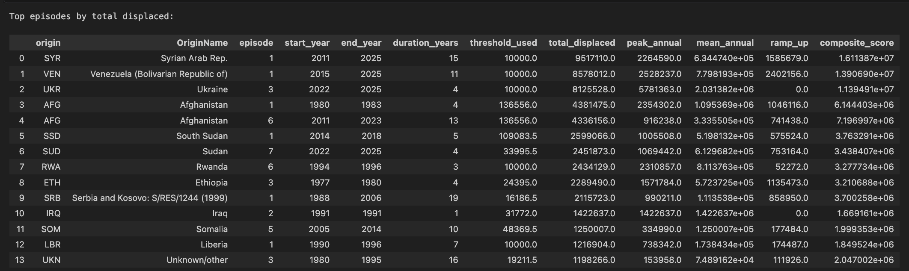
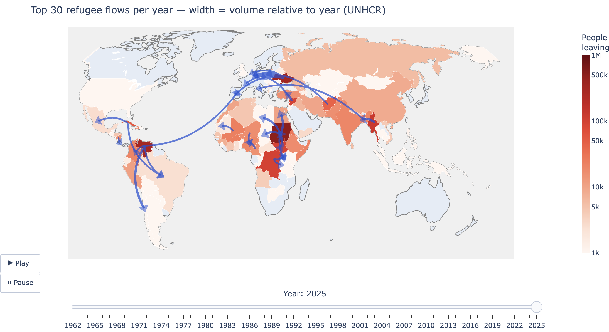

INTRODUCTION:
What is our story?
Our data shows global displacements between 1962 and 2025. Where do people go?
If they are forced out of their home country, how far do they go? what patterns can we find there and has it changed over time?
There are so many conflicts and so many displacements around the world... So for this analysis we'll pick 3 major events
and analyse & map out where people go.
A focus on distance and proximity.
OUR DATA: UNHCR data on displacements around the world, from 1962 to 2025
OUR DATA:
pros:
- covers a long period of time (1962-2025)
- covers a large number of countries (origin and arrival)
- reilable source (UNHCR)
limitations:
- limited dats from 1960 to ...1980...real increase in data from 2000
- only tracks INTERNATIONAL movements... so it's not adequate for "natural disasters", or local population movements
- displacements are recorded per year: so we can-t look at the "immediate" impact of a crisis, but rather the "long-term" impact.
and we can't look at super short yet intense crisis.
- Keeping in mind the numbers we have are only the "officially" recorded displacements... there are probably many more.
- "unknown" or "stateless" displacements: missing data, change of country name/status, or a wish for anonymity for safety reasons?
VISUALS?: our favorite TOP 10 largest diplacements in recent History.
"Wow, that's a lot of displacements!"

A LOOK AT THE BIG PICTURE:
- let's map all displacements accross the years for a start.
- Who moved where when?
VISUALS: all conflicts Map (AKA Oier's map)

conclusions?
- The map shows more and more displacements over time. most probably due to the inclease in data collection and reporting (vs: not because there are more displacements)
also because our data only shows international displacements so a portion of movements isn't taken into consideration.
- we invite the reader to explore the map and and use the timeline to get a better understanding of the evolution of displacements over time.
from this initial data anslysis and from this map, we decided to choose three conflicts to focus on.
we chose:
Afganistan 1980
Rwanda 1994-1996
Ukraine 2022
They take place in diffrerent decades, and so are good examples to look at the evolution of displacements over time.